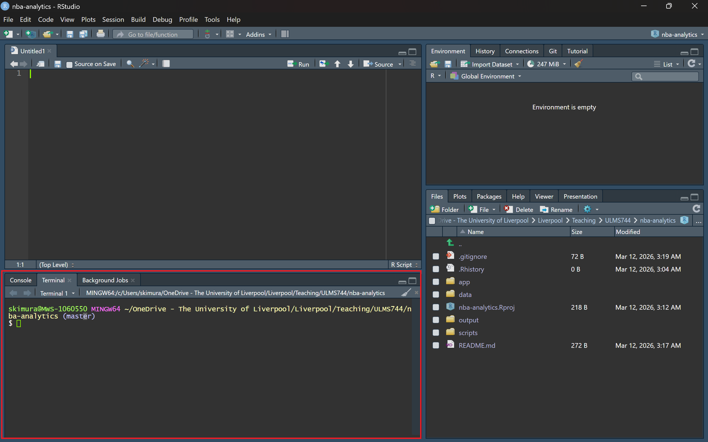

In this five-week seminar block, we will build a complete sports analytics workflow in public, using NBA basketball as the shared worked example. By the end of the block, you will have a live dashboard on GitHub Pages and a repository that shows your project process clearly.
This week is about foundations. We are not analysing data yet. We are making sure your tools, folders and version control are in place so that the later analytical work runs smoothly.
We will:
install the package stack for the seminar block;
create a clean RStudio project;
connect that project to GitHub;
make and push a first commit.
The seminar example is basketball, but the workflow is broader than basketball. Good setup, good file structure and good version control are transferable to any sport analytics project.
1 Key Terms
Before we start, it helps to separate three terms that sound similar but do different jobs.
Git is the version-control software installed on your computer. It tracks changes to files over time.
GitHub is the website that hosts Git repositories online, so you can back up your work, share it, and submit it publicly.
GitHub Pages is GitHub’s web publishing service. Later in the module, you will use it to publish a website version of your project, such as a dashboard or portfolio page.
In short: Git tracks your work locally, GitHub stores and shares it online, and GitHub Pages turns part of that online repository into a website.
2 Why This Matters
Analysts do not work in isolated scripts. They work in projects that need to be:
reproducible;
easy to revisit;
easy to share;
easy to extend into reports, dashboards and published outputs.
Git and GitHub are therefore part of the analytical workflow, not an optional extra.
3 Pre-Class Checklist
Before the seminar, make sure that:
As a student, you can apply to GitHub Education. Follow the application steps at this link: [link]. This will grant you access to additional features that may become useful later in the module.
If package installation fails, read the error carefully before retrying. Most problems come from a missing system dependency, a permissions issue, or an interrupted download.
4.2 Step 2: Create the Project
An RStudio Project keeps all of the files for one piece of work together in one folder. The file with the .Rproj extension stores the project settings, and opening that file tells RStudio, “this is the working directory for this project”.
Create a new RStudio project:
File -> New Project -> New Directory -> New Project
project name: nba-analytics
tick Create a git repository
for the location, choose your OneDrive folder
inside OneDrive, create a folder called ULMS744 if you do not already have one
create nba-analytics inside that ULMS744 folder
So the project should live in a location similar to:
OneDrive/
└── ULMS744/
└── nba-analytics/
This matters because you need a folder structure you can find quickly, back up easily, and reuse throughout the module.
Let’s go through how to open this project together. First, quit your session by going to File -> Close Project. Whenever you want to start your new R session, go to File -> Open Project and then navigate to the folder where you saved your project. Once you open that folder, click the .Rproj file (in our case, you should see a file called nba-analytics.Rproj in the folder). Now we’re ready!
Once you open a project, you should see the file panel update automatically.
Then create the project folders we will use throughout the block (paste below in the RStudio Console).
A README.md file is the short front-page description of a project. When someone opens your repository on GitHub, the README is usually the first thing they see. It should explain, in plain language, what the project is and what it is for.
In the Files pane in RStudio:
click New File
choose Text File
save it as README.md
copy and paste the text below into the file
# NBA Analytics WorkflowA seminar project for ULMS744: Sports Analytics in Practice.This project uses NBA basketball as a worked example to build a reproducible sports analytics workflow in R.Tools used: tidyverse, hoopR, sportyR, plotly, Shiny, and Shinylive.
4.4 Step 4: Check .gitignore
The .gitignore file tells Git which files it should not track. This is useful for temporary files, machine-specific files, and files that would create clutter or problems if uploaded to GitHub.
.Rhistory is a record of commands typed in the R console.
.Rdata and .RData are saved R workspace files.
.Ruserdata stores user-specific session settings.
.DS_Store is a hidden macOS system file.
Thumbs.db is a hidden Windows system file.
*.zip and *.gz mean any compressed archive with those endings.
We ignore these files because they are usually temporary, computer-specific, or not part of the main project deliverable. Keeping them out of the repository makes the project cleaner and reduces the chance of uploading unnecessary files to GitHub.
4.5 Step 5: Create the GitHub Repository
GitHub is a website that hosts Git repositories online. It gives you a remote repository, meaning a copy of your project that lives on the web rather than only on your own computer.
A repository or repo is the full project folder that Git tracks over time, including its files and version history.
On GitHub:
create a new repository called nba-analytics [how-to guide];
make it Public;
do not add a README or .gitignore on GitHub.
At this point you will have:
a local repository on your computer inside your RStudio project folder;
a remote repository on GitHub.
The local repository is where you do the work. The remote repository is the online copy that you push to GitHub so it can be backed up, shared, and submitted as part of your portfolio.
4.6 Step 6: Authenticate and Connect
Create a Personal Access Token:
R console
usethis::create_github_token()
This will open GitHub in your browser so that you can create a Personal Access Token (PAT). A PAT is like a password that allows RStudio and Git to talk securely to your GitHub account.
After GitHub shows you the token:
copy the token immediately;
return to RStudio;
run the command below in the Console;
paste the token when R asks for it;
press Enter.
R console
gitcreds::gitcreds_set()
This stores the token securely on your computer so that Git can authenticate when you push to GitHub.
Then open the Terminal tab inside RStudio and add the remote repository, replacing YOUR-USERNAME.
For command-line steps in this workbook, use the Terminal tab inside RStudio.

Terminal tab shown inside the red box.
RStudio Terminal
git remote add origin https://github.com/YOUR-USERNAME/nba-analytics.gitgit branch -M main
This command links your local repository to the remote repository on GitHub. After that, your local project and the online project can talk to each other.
4.7 Step 7: Make Your First Commit
In Git, staging means telling Git, “these are the files I want to include in my next save point”. You can think of the staging area as a waiting area for changes that are ready to be recorded.
A commit is that recorded save point. It is a snapshot of your project at a particular moment, together with a short message explaining what you did.
For this first commit, you want to include the files you have just created for the project setup.
Then commit with the message:
Initial project setup
In simple terms, the workflow is:
stage the files, meaning choose what will go into the snapshot;
commit the files, meaning save that snapshot into the Git history;
push the commit, meaning send that saved snapshot to GitHub.
In the RStudio Terminal, the commands for your first commit are:
git add . stages all current files in the project folder for the next commit.
git commit -m "Initial project setup" creates the snapshot and gives it a message.
git push -u origin main uploads that commit to GitHub and connects your local main branch to the remote one.
Push to GitHub and verify that the repository is visible online. Once this is done, you have created both the local project history and the remote online copy of that history.